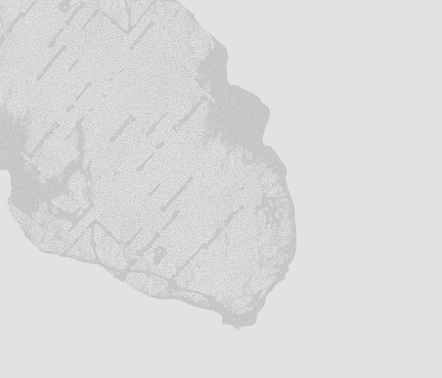

Story
Le désert du Namib s’est formé il y a plus de 50 millions d’années, sous l’influence des courants froids de l’Atlantique qui ont progressivement asséché la côte sud-ouest de l’Afrique. Occupé très tôt par les peuples San et Nama, il a longtemps constitué une barrière naturelle pour les explorateurs européens. Son isolement a permis la préservation de paysages et d’écosystèmes uniques, aujourd’hui en grande partie protégés et étudiés pour leur importance climatique et géologique.